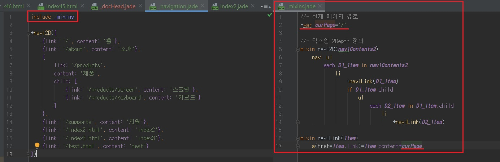
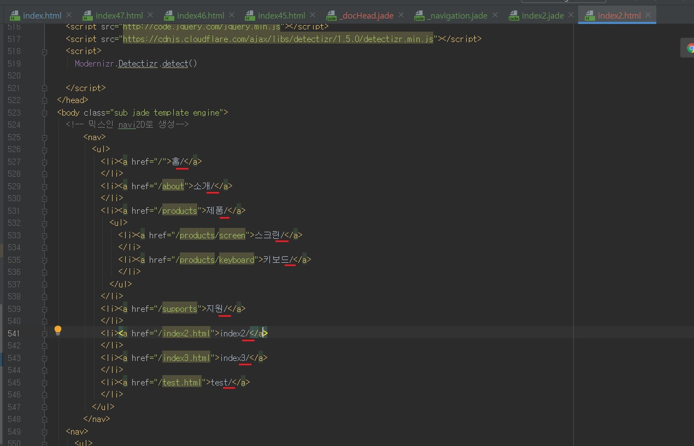

환경 설정(Configuration) 분리하기
- 환경 설정(Configuration) 분리하기
-
이제 템플릿 문서에서 환경 설정 영역을 분리하여 _config.jade 문서를 작성합니다.
먼저 _docTemplate.jade 파일을 열어 위쪽에 위치한 설정 변수 영역의 코드를 잘라냅니다.
빨강색 테두리 영역입니다.
[parts] 디렉터리에 _config.jade 파일을 추가한 후 잘라 낸 코드를 붙여 넣습니다.
그리고 _docTemplate.jade 파일의 설정 변수 주석 영역에 분리된 _config.jade 파일을 포함(include)하도록 코드를 입력하여 저장합니다.


아 아까 내가 의문품었던거네..
나는 _mixins라는 파일명으로 분리해서 include했었고 책에서는 _config라는 파일명으로 분리
- 변수 curPage 덮어쓰는 방법 (환경 설정 덮어쓰기 Overriding)
-
index2.html 웹페이지에서 해당 변수를 변경하려면 _mixins.jade 파일의 변수 curPage 값을 변경해야합니다.
즉, index2.jade 파일에서 환경변수 curPage 설정 값을 덮어쓸 수 있도록 만듭니다.